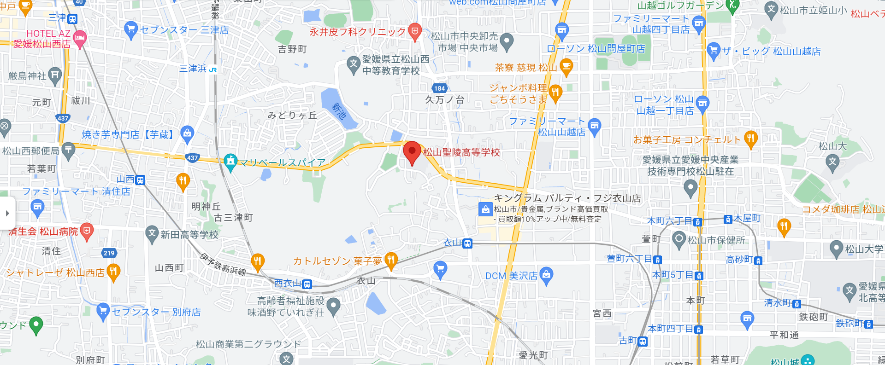

松山聖陵高等学校
目次
場所・立地
最寄り駅は衣山駅、近くにはパルティフジ衣山があり、学校終わりにはそこで遊ぶ学生も少なくない

学校の特徴
学科がいくつかあり主に普通科、工業科、スポーツ科、特別進学コースがあり、中でもコースが分かれている科も存在する。
学科別の特徴
| 普通科 |
情報コース |
主にofficeの使いこなせるようになるために検定取得を目標としている、他にも電卓の授業も行っている。 |
進学コース |
読んで字の如く、大学、短大への入学を目指すコース |
| スポーツコース |
こちらも読んで字の如く、スポーツに重きを置いたコース、それぞれの部活が全国大会を目指せるエリートを育成する。 |
| 工業科 |
自動車工学科 |
|
自動車整備士を目指す学科です。在学中にガス溶接や危険物取扱者等の資格を取得することが出来ます。 |
機械科 |
|
エンジニアを目指す学科です。在学中にガス溶接の技能講習を受けたり、フォークリフト等の乗り物の免許を取得できます。 |
| 建築科 |
技術コース |
建築CAD設計を中心とした学習 |
| ものづくりコース |
木工実習を中心とした学習 |
インテリアデザインコース |
2級インテリア設計士の取得を目標とした学習 |
| 資格コース |
主に建築系の車両の資格や検定の取得を目標とした学習 |
| 特別進学コース |
通常コースの生徒達よりもさらに勉強をして、より上の大学進学を目指す学科です。
|
主な有名人
- 藤岡弘、（俳優）
- ノッチ（お笑い芸人）
- 不老伸行（サッカー選手）
- アドゥワ誠（プロ野球選手）
- 土居豪人（プロ野球選手）
- 河本結（プロゴルファー）
- 金子正次（脚本家、俳優）